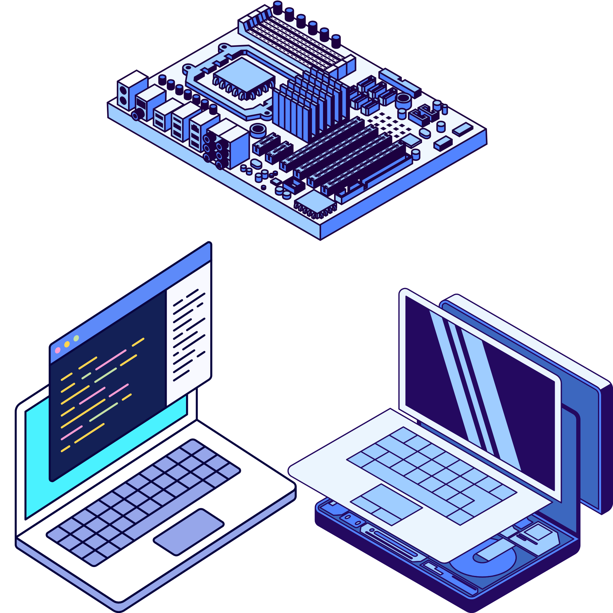

The Computer Engineering (CpE) Program educates students to understand both sides of the hardware-software interface, from designing circuits to creating operating systems. Multidisciplinary in scope, the CpE curriculum integrates the fields of electrical engineering and computer science. This program will uniquely prepare CpE graduates to design and develop embedded digital and computer systems. Graduates with a degree in CpE will be highly skilled and ideally suited for 21st-century industries, including the games industry.

Computers rely on hardware and software working together, managed by operating systems that process raw data into usable information and use networking hardware to connect systems from private Intranets to the global Internet.
Hands-on laboratories provide students with direct experience using modern facilities–such as digital logic design labs, embedded systems testbeds, and networking suites–to assemble, program, and troubleshoot real-world computer hardware and software systems.
Graduates enter high-demand technical roles across tech, defense, automotive, and telecommunications–working as embedded systems engineers, firmware developers, computer hardware engineers, systems architects, network engineers, and full-stack software developers.